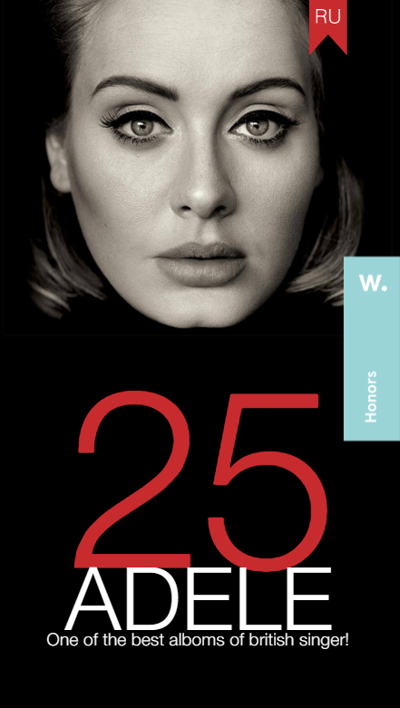

Hick's Law
Google's page does a wonderful job of utilizing Hick's Law by eliminating everything else except the purpose of the page- which is to search. By keeping the page clean, Google makes it much less overwhelming to search on the internet.
Contrast
Adele 25
Using the stark contrast of black and white, this website uses these opposites to highlight both Adele's face. They also used size contrast to draw the view to the number 25- in reference to her most recent album.
White Space and Clean Design
Los Angeles Times
The LA Times utilizes the area provides by creating a clean and simple face, separating different sections using white space which allows views to easily scan the page while at the same time keeping an organized look.